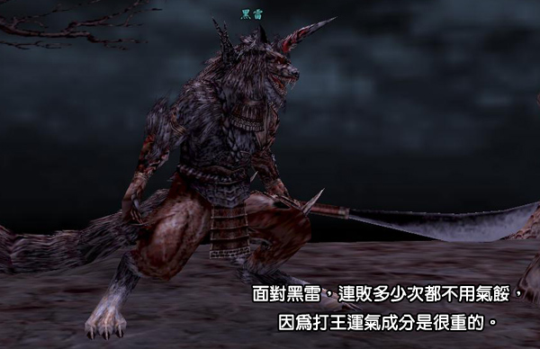
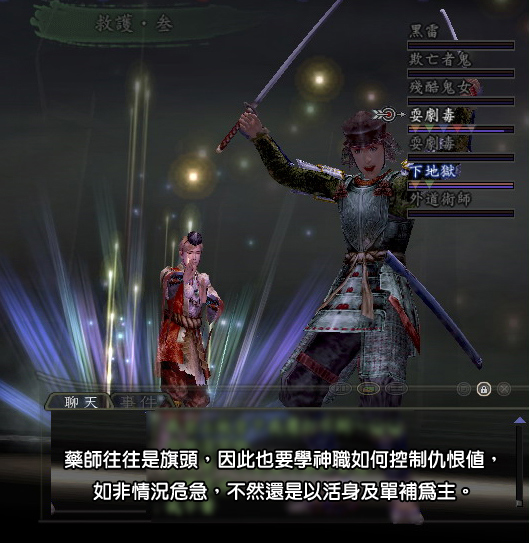
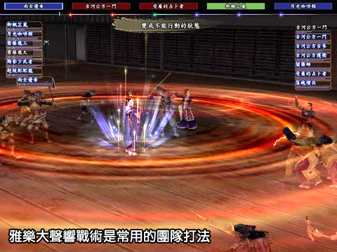
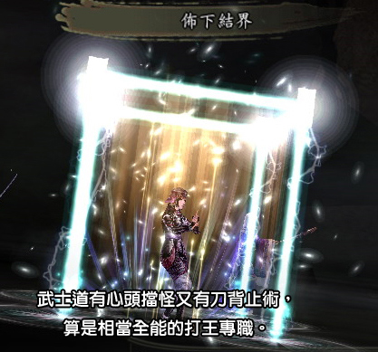

終於來到傳說中的根之國了！經驗、潛在高，又有各式+6的入魂石，可以說是練功賺錢兩相宜。
但是玩家並不能就此自滿，畢竟我們最終的目標是要進入伊邪那美神宮（+120的蛋白與霰石，以及+6的方解、天河、薔薇石），
而黑雷、伏雷、火雷的程度，比前面兩隻更是差之甚遠。不過經過前面的磨練，
想必玩家打王時技巧的運用及時機的判斷應該都已更加純熟，只要多幾次的實戰經驗，繼續往下闖絕對沒問題。
黑雷是筆者認為最難纏的一隻雷了，因為極高的物攻讓許多前來挑戰的團隊都鎩羽而歸，
而這背後代表的意義，可以從前面打魔犬那幾點，再做深入的探討及改進。

首先是自身裝備與等級的提升。能來到這裡的玩家，相信裝備應該都有一定的水準，
只是如果單單就以打前兩隻王所準備的裝，也許會有不足。
比較重要的莫過於鍛的防、耐與血的加成（至少要做到被黑雷打不會秒掉），還有武士道耐、魅、血的加成，
以及軍學的智裝等等，注意一些小細節，可能是在打小黑這場抗戰中的致勝關鍵。
等級的提升對於盾役是非常重要的，因為等級不夠、守護率不高，便會讓隊友暴露在危險之中，
相信這種情況每個盾役都不樂見，所以等級的提升是先決條件。
再來是個人技巧的精進，先讀的判斷在往後是愈來愈重要，根據筆者的經驗，打黑雷除非怪剩1、2隻讓場面整個穩定下來，
否則一個指令下錯或止術沒止到，導致翻船全滅也不是沒發生過。
筆者有一次在幫人過黑雷時，一個怪唱極忘了告知隊友，另一位識破隊員也沒有識破，
結果瞬間一個甦醒‧壹與完全回復下來，對於整個隊伍的士氣是一大打擊（等於白打了半小時）。
像這樣一個指令下錯，就會造成隊友浪費時間，又有滅團的危機，所以提升自身技巧也是一門功課。
最後，注重團隊配合度，千萬不要強出頭。下列情況練功時常常出現，更別說打王：神職該唱不唱、該氣韻不氣韻，
鍛跟軍學沒黃燈也不補燈，只會拼命地下搖籃，結果怪又不賞臉一隻都睡不到，這時就真的讓人挺無言的；
鍛鎧不夠、單拉不住王（痛罵），又拉了一大群小怪（聲東擊西），和武士道搶飯碗也讓人挺擔心；
武士道該心頭就心頭、該刀背就刀背，盡量多拉一點（雖然不是自己能控制的）；
藥師出門有沒有帶水、信心不足夠、膽子不夠大、不太敢下全回，該補的時候又一直給你活身，讓盾役要倒不倒的，
像風中殘燭般提心吊膽，這對盾役來說也是非常可怕的事（不過真的來不及的話，請自行吃藥，不能都怪罪藥師，因為藥師也很忙）。
如果隊上有佛門或密教的話，後光跟孔雀也是需要注意的，時間長短的拿捏，相信玩僧的人都可以控制得很好。
還有一點就是僧職心臟也需要練大顆點，緊要情況時大往生與藥師的完全回復（救僧）的配合，就得靠團隊間的默契了。

有了以上的改進之後，相信玩家一定躍躍欲試了吧。需要再提醒一次的是，黑雷的物攻極高，盾役要特別小心，
如果是使用所謂打王陣容的隊伍，武士道開場心頭是一定的，鍛鎧極、雅樂用大聲響，是筆者建議的常用戰術。
此外陰陽如果黑暗沒貼到的話，軍學可以使用逆轉，由於黑雷氣少，
而且逆轉之後會變得很笨，容易中催眠（搖籃），這點可以好好利用一下。
如果神職用的是古神，上述的氣少也是可以利用的點，以神氣擊讓黑雷一直補氣，
可以有效的控制住物攻及牠的得意技「黑暗炫風」，減輕盾役的壓力。

但正因為黑雷容易控制，所以打王的另一個重點就是小怪的大法及特別常用的全回；
軍學的目標就是沉3隻怪：2、3、7與止術，要顧這麼多，軍學必定會忙不過來。
因此武士道也需要幫忙止術，而沉2、3、7的意義在於2、3會魔之祝福（全體回復不必準備），
還有3的眼光、7會妖魅影（全體麻痺、生命力減少，有點像死誘的進階版＋必中）。
攻擊手攻擊順序建議3→7→2→1→4→5→6，先打死3防止牠魔之祝福與眼光。
筆者過黑雷的團與對戰析雷的陣容一樣：鎧鍛、武士道、雅樂、藥師、陰陽道、召陰、軍學，
開場也是同樣使用大聲響戰術。因為是雙陰陽，開場一個放低速，一個放黑暗，
第二回合召陰開始召喚幽姬，陰陽道結界後開太極，之後就一直持續同樣的步驟。
陰陽師要有個覺悟，就是仇恨太高，控制不住時很容易變成陰陽盾，
但其實在有結界肆保護下的陰陽道，太極的高仇恨反而可以使盾役喘口氣。
召出幽姬就是為了穩定全場，運氣好出現魔之祝福就算賺到了，再來就是百鬼補刀。
武士道要幫忙的就是牽制黑雷，偶爾幫忙止術及適時的刀背，因為開雙陰止術役容易不足，
所以武士道除了拉怪、心頭之外，還要注意止術跟黑雷動作，軍學就要做到上面所說的幾件事情，沉2、3、7等3隻怪與止術。
特別要注意的是，因為開場是直接把3轟掉，所以7一定要顧好，否則妖魅影一下，一切又重來。

整體來說，後期王雖然愈來愈會作弊，但是就隊伍的組成與技巧上，是不會有太大的改變，
只要做好自己職業份內事，
並精進自己的技巧，日後面對任何類型的王，相信都不會造成太大的困擾，剩下的，就只是耐心與運氣了。
雙補雙盾，另類不死蟑螂戰法
如果能夠將戰局延長至2小時，黑雷就會開始脫兔，玩家也會因此而獲勝，所以不求火力只求穩的雙補雙盾打法，也有滿多團隊挑戰成功。
黑雷隊伍組成
名字 |
等級 |
擁有技能 |
黑雷 |
65 |
黑暗炫風、甦醒‧壹、沉默之霧‧參、全體識破、咒縛、鬥氣、結界、煙消霧散、奪賦予 |
欺亡者鬼 |
60 |
魔之祝福、敲破‧壹～極、甦醒‧壹、全體完全回復、完全回復、沉默、霧散、結界、解咒、凍氣‧貳、煙消霧散、怪光線、唱韻‧極 |
殘酷鬼女 |
58 |
魔之祝福、敲破‧壹～極、眼光、衰氣光、乏力之舞、沉默之霧、唱韻‧極、解咒 |
耍劇毒 |
59 |
敲破‧貳～極、全體完全回復、意氣消沉、結界、邪光、唱韻‧極、解咒、甦醒、防禦詛咒 |
耍劇毒 |
62 |
敲破‧貳～極、全體完全回復、意氣消沉、結界、邪光、唱韻‧極、解咒、甦醒、防禦詛咒、治療‧三、全體喝破 |
下地獄 |
58 |
敲破‧貳～極、沉默、乏力之舞、全體識破、毒液 |
外道術師 |
61 |
敲破‧貳～極、低速‧參、冷氣‧肆、風刃‧肆、火炎‧肆、萬雷、龍捲風、吹雪、煉獄、天懲、結界、妖魅影 |
相關資訊
●根之國解說
●根之國「黑雷之戰」影片